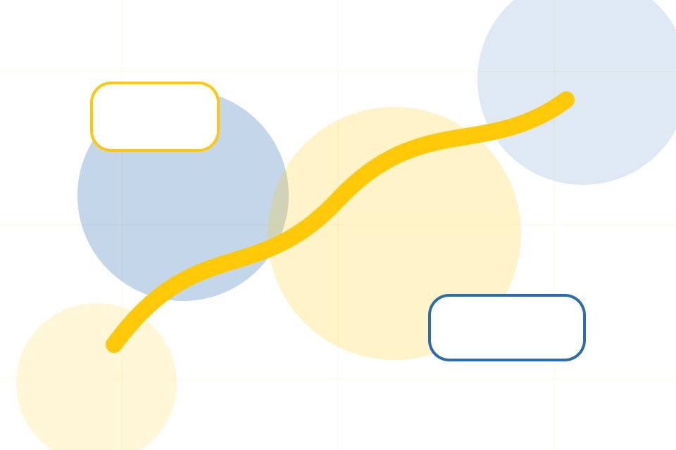
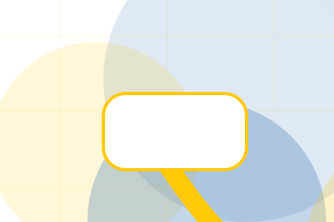
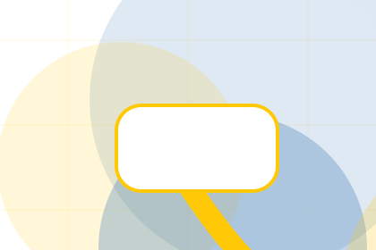
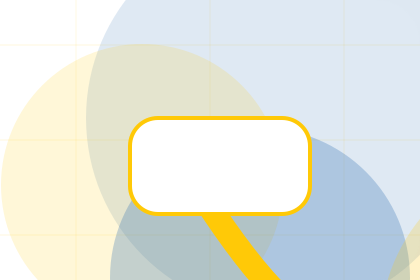
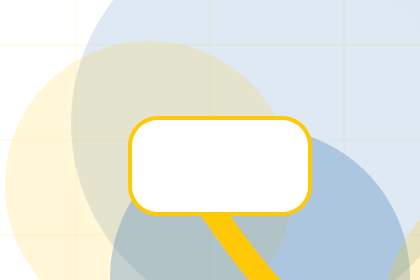
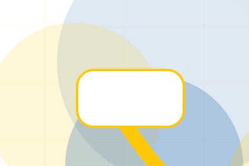
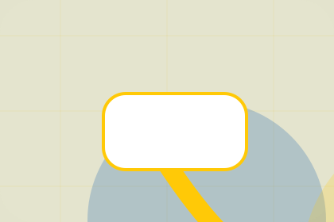

Organisation / 01
Organisation by Good
Organisation shaped for nonprofit, charity & social impact decisions.
Organisation opens as a clear nonprofit decision hub: what Good offers, who it helps, why it matters, and which route to take first.
The first screen combines positioning, proof, primary action, and fast internal navigation, so people can act immediately or compare the rest of the organisation route with context.
Nonprofit scopeCompare optionsRequest advice
Yellow impact hero
Choose an impact route
Select the closest route and Good keeps the next step, proof, and follow-up expectation aligned with trust and contribution.

Organisation / 03
Board inside organisation
Board adds professional context to the organisation route, using the transparent donation impact flow structure to support trust and contribution before visitors choose a next step.
Good uses impact story cards and focused copy to make the decision easier to scan, aligning the section with trust and contribution rather than filling space.
Explore OrganisationContext
Board gives the page a specific angle instead of repeating the navigation label.
Judgment
The impact story cards show what to compare, what to avoid, and what matters most for nonprofit, charity & social impact visitors.

Direction
The final cue points to a useful internal route so the section keeps the journey moving.
Organisation / 04
Governance inside organisation
Governance adds professional context to the organisation route, using the transparent donation impact flow structure to support trust and contribution before visitors choose a next step.
Good uses impact story cards and focused copy to make the decision easier to scan, aligning the section with trust and contribution rather than filling space.
Explore OrganisationGovernance gives the page a specific angle instead of repeating the navigation label.
The impact story cards show what to compare, what to avoid, and what matters most for nonprofit, charity & social impact visitors.
The final cue points to a useful internal route so the section keeps the journey moving.
Organisation / 05
Values inside organisation
Values adds professional context to the organisation route, using the transparent donation impact flow structure to support trust and contribution before visitors choose a next step.
Good uses impact story cards and focused copy to make the decision easier to scan, aligning the section with trust and contribution rather than filling space.
Explore Organisation- 01
Context
Values gives the page a specific angle instead of repeating the navigation label.
- 02
Judgment
The impact story cards show what to compare, what to avoid, and what matters most for nonprofit, charity & social impact visitors.
- 03
Direction
The final cue points to a useful internal route so the section keeps the journey moving.
Organisation / 06
Partners as proof
Partners gives the proof layer for organisation: standards, evidence, and reassurance that make the next decision feel grounded.
Instead of relying on vague claims, Good presents visible standards, process cues, and proof artifacts that help nonprofit visitors judge fit.
Explore OrganisationGood structures partners around evidence, standard, and a clear next route so visitors can compare the block quickly before they donate today.
Donate TodayOrganisation / 07
Transparency inside organisation
Transparency adds professional context to the organisation route, using the transparent donation impact flow structure to support trust and contribution before visitors choose a next step.
Good uses impact story cards and focused copy to make the decision easier to scan, aligning the section with trust and contribution rather than filling space.
Explore Organisation

Context
Transparency gives the page a specific angle instead of repeating the navigation label.
Organisation / 08
History inside organisation
History adds professional context to the organisation route, using the transparent donation impact flow structure to support trust and contribution before visitors choose a next step.
Good uses impact story cards and focused copy to make the decision easier to scan, aligning the section with trust and contribution rather than filling space.
Explore OrganisationContext
History gives the page a specific angle instead of repeating the navigation label.

Judgment
The impact story cards show what to compare, what to avoid, and what matters most for nonprofit, charity & social impact visitors.

Direction
The final cue points to a useful internal route so the section keeps the journey moving.
Organisation / 09
Trust, not claims
Trust gives the proof layer for organisation: standards, evidence, and reassurance that make the next decision feel grounded.
Instead of relying on vague claims, Good presents visible standards, process cues, and proof artifacts that help nonprofit visitors judge fit.
Explore OrganisationVisible proof that helps visitors believe the claims behind trust.
The quality, safety, or operating expectation this section makes explicit.
What becomes clearer before someone decides whether to donate today.
Organisation / 10
Donate Today
Good closes the organisation route with a clear action, a quick reminder of the value, and a low-friction way to donate today.
Visitors who are ready can use the primary action. Visitors who are still comparing can scan the section links, proof, and support routes before they donate today.
Donate TodayThe final block keeps the choice simple: act now, compare one more proof route, or send enough detail for a focused response.
Donate Todaytrust and contribution
Donate Today
A donor site with bold yellow impact modules, transparent metrics, story cards, and donation selector. Organisation ends with a direct path to donate today, plus enough context for visitors who still need to compare.

Donate TodayImportant notes before you act
Donation use statements must match governance records, reporting, and local fundraising rules.